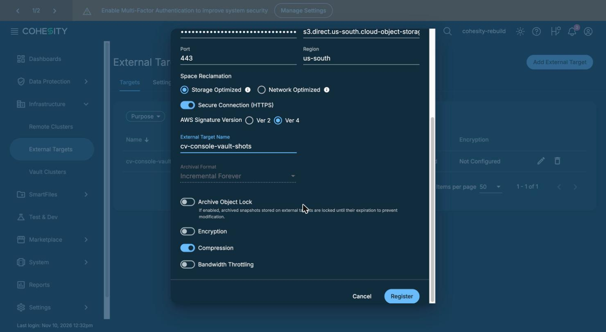
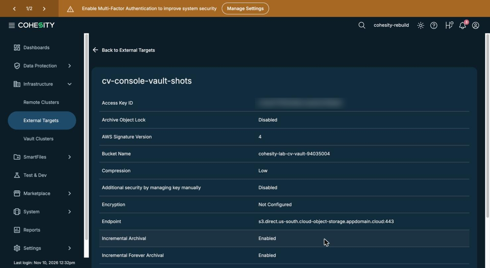
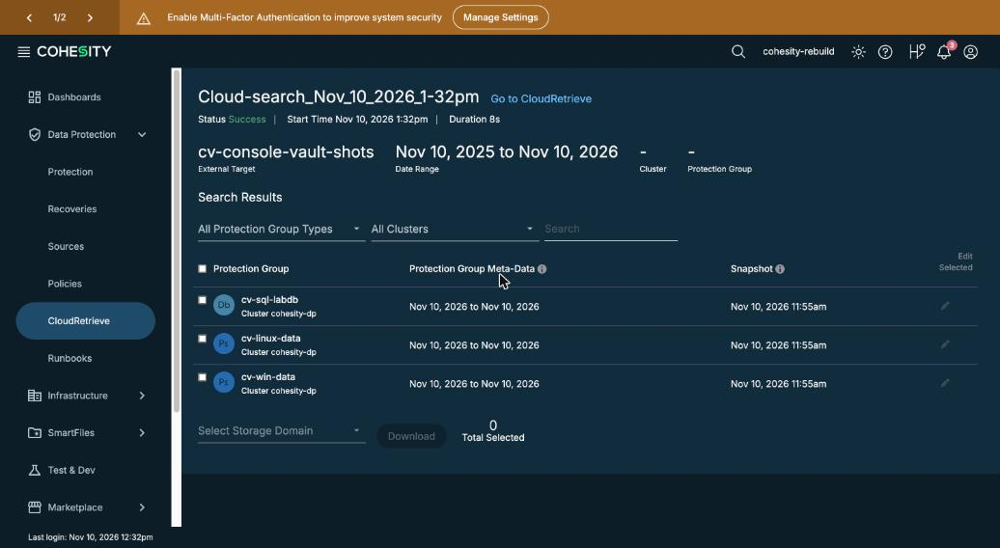
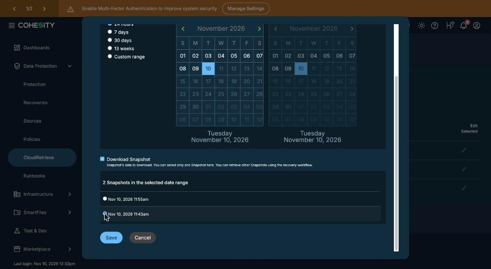
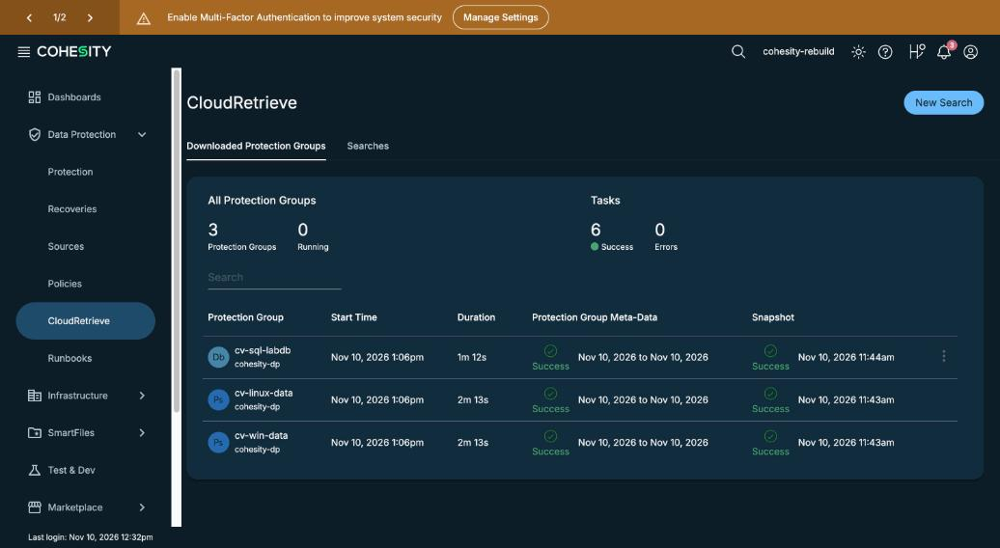

Rebuild with only the read key
By the end you can list the steps that rebuild from the vault alone, say which two switches to turn off when you add the vault, and choose the clean run to download.
Northgate Freight is a made-up company. Its backup cluster is destroyed. The only thing left is the vault, and the one key Northgate holds for it: the read key.
Every number and screen in this unit comes from a real run in our lab on 10 November 2026. The screenshots show a second registration of the vault, named cv-console-vault-shots. When you do this yourself, type a name of your own. The vault is a Beta in us-south, with no SLA.
Terms used. CloudRetrieve: the Data Protect feature that searches an archive target and downloads backups from it to a new cluster. DefaultStorageDomain: the cluster's default place to keep downloaded backups. TLS error: a failure to set up a secure connection.
Six steps, and nothing from the old cluster
At 12:05 the lab destroyed the old cluster, and removed both agents from the servers. Only the vault held the data. The new cluster was created at 12:26.
With the old cluster destroyed, what holds Northgate's data?
Show the answer
The old cluster was destroyed at 12:05 and the servers were already attacked. The new cluster was created with nothing in it. The vault was the only copy of the clean data.
Why does each server need the new cluster's agent?
Show the answer
The agent trusts one cluster. In the lab the new cluster's agent went on each server before the sources were registered.
Add the vault: two switches
In the console, Infrastructure > External Targets > Add. The form is the one used to add the vault in the first place, with two differences. Here are the fields. The bucket name and the keys are placeholders: values were changed.
Purpose Archival Storage Type S3Compatible Storage Class Standard Bucket Name <your vault's bucket name> Access Key ID <the read key's ID> Secret Access Key <the read key's secret> Endpoint s3.direct.us-south.cloud-object-storage.appdomain.cloud Port 443 Region us-south Archive Object Lock ? Encryption ?
The archive was written without encryption. What should Encryption be?
Show the answer
The form opens with Encryption on, using the internal key manager. The lab turned it off, because the archive was written with no encryption.
What should Archive Object Lock be on a read-only registration?
Show the answer
The vault enforces the lock itself, so the archive stays immutable. In the lab the registration worked with the read key and the lock switch off.
Add, search, pick, download
These screens come from the Data Protect console of the new cluster in our lab. Click where you would click. After two misses the right place is marked.

The name is typed and the Archive Object Lock switch is off. Which switch must also be off for an archive written without encryption?
Show where
Right. Encryption is off here, below Archive Object Lock. It opens switched on, so you must turn it off.

The target is registered. Where does its details page show the lock switch was left off?
Show where
Right. Archive Object Lock says Disabled, and Encryption says Not Configured. The Access Key ID is blurred in this picture; never share a screenshot with a key in it.

You searched the vault in CloudRetrieve. Where are the groups the search found?
Show where
Right. The Protection Group column lists all three groups of the old cluster cohesity-dp. The new cluster found them with only the read key.

Open the snapshot picker. Which snapshot do you choose, if the attack was at 11:54?
Show where
Right. The 11:43 snapshot is from before the attack. Choose DefaultStorageDomain and click Download.

The download finished. Where do you check that the clean run was retrieved for each group?
Show where
Right. The Snapshot column shows 11:44am for SQL and 11:43am for Linux and Windows: the clean runs. All three show Success.
An agent that keeps its old trust
Northgate's Linux admin upgrades the agent in place with rpm -Uvh --force, then registers the server on the new cluster.
What the lab did on Linux, 10 November 2026: 1. Remove the package cohesity-agent 2. Delete /etc/cohesity-agent/agent.cfg and the .rpmsave copy 3. Install the new cluster's rpm
What happens to the registration after a plain rpm -Uvh --force?
Show the answer
A plain rpm -Uvh --force keeps the old trust and registration fails with a TLS error. The lab removed the package and the saved configuration first.
On Windows, what did the lab check, and do, around the agent install?
Show the answer
The lab checked the size of the download and rebooted after the install. Then the sources were registered: Linux source 3, Windows source 7, with SQL turned on at source 7, and all four checks passed.
Watch for this. A server still trusts the old cluster until its agent is replaced. A registration that fails with a TLS error points at the agent, not at the vault.
Three questions
Which two switches did the lab turn off when it added the vault with the read key?
Show the answer
Encryption, because the archive was written without it, and Archive Object Lock, because the lock is on the vault.
What did the new cluster hold when it was created?
Show the answer
The search found all three groups of the old cluster with only the read key.
The attack was at 11:54. The picker lists 11:55 and 11:43. Which do you download?
Show the answer
The picker lets you tick one snapshot to download, and the lab chose the runs from before the attack.
You can rebuild from the read key
A new cluster with only the read key found every group in the vault. Add the vault with Encryption off and Archive Object Lock off, replace each server's agent, search, pick the run from before the attack, and download.